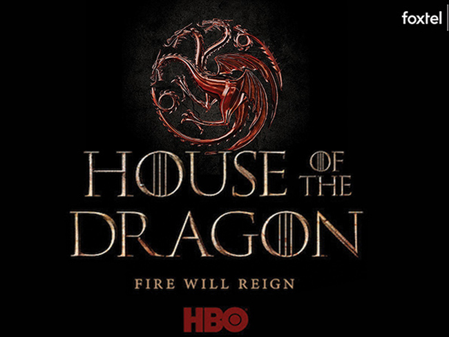

Game of Thrones prequel series House of the Dragon released a new teaser trailer in October that provides glimpses of its stars, including Paddy Considine as King Viserys Targaryen, Emma D’Arcy as Princess Rhaenyra Targaryen, Matt Smith as Prince Daemon Targaryen, Olivia Cooke as Alicent Hightower, Steve Toussaint as Lord Corlys Velaryon, and Sonoya Mizuno as Prince Daemon’s ally Mysaria.
Cast of House of Dragon
House of the Dragon is an upcoming American fantasy drama television series created by George R. R. Martin and Ryan J. Condal for HBO. It is a prequel to the television series Game of Thrones (2011–2019) and is based on Martin's 2018 novel Fire & Blood. The series is set two hundred years before the events of Game of Thrones[2] and chronicles the beginning of the end of House Targaryen, the events leading up to the Targaryen civil war, known as the "Dance of the Dragons", and the war itself. House of the Dragon received a straight-to-series order in October 2019 with casting beginning in July 2020 and principal photography beginning in April 2021 in the United Kingdom. The first season of the series is scheduled to premiere in 2022 and will consist of ten episodes.